Lucid style sample.
The style frame from Figma (634:138) beside its rebuild as an animated illustration, made from the frame's own vectors. In the loop, a call runs along the beam into the ring, the ring lights, light rises up the stack and the $ glints.
